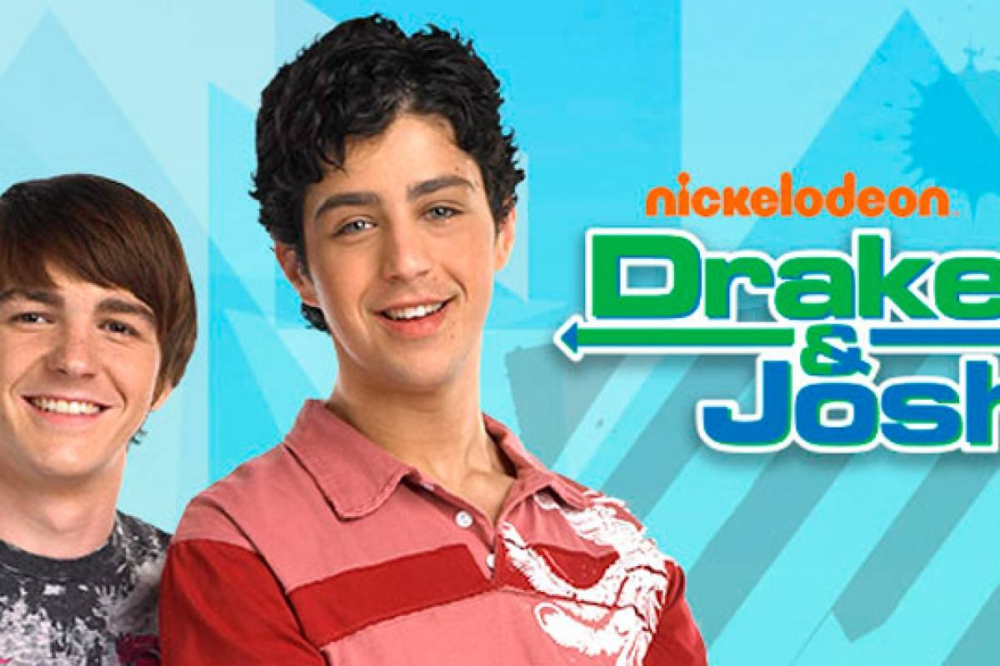

Descripción:
Es una serie de comedia adolescente creada por Dan Schneider, es un spin-off de El Show de Amanda producida y transmitida por la cadena Nickelodeon. Protagonizada por Drake Bell y Josh Peck, antagonizada por Miranda Cosgrove y co-protagonizada por Nancy Sullivan y Jonathan Goldstein. Comenzó a transmitirse el 9 de enero de 2004. El 11 de septiembre de 2007, se estrenó el capítulo "El Concurso de Baile" con el cual se decía que terminaría la serie, pero el 5 de diciembre de 2008 se estrenó la película "Merry Christmas, Drake & Josh" en Estados Unidos, y el 18 de diciembre de 2009 en Latinoamérica. Drake & Josh está basado en una escena de El Show de Amanda, en el que Josh Peck y Drake Bell pelean por un camarón, esa escena se puede ver al final de la película "Un Camarón Gigante" Ya que esta fue la escena que le dio la vida al programa.